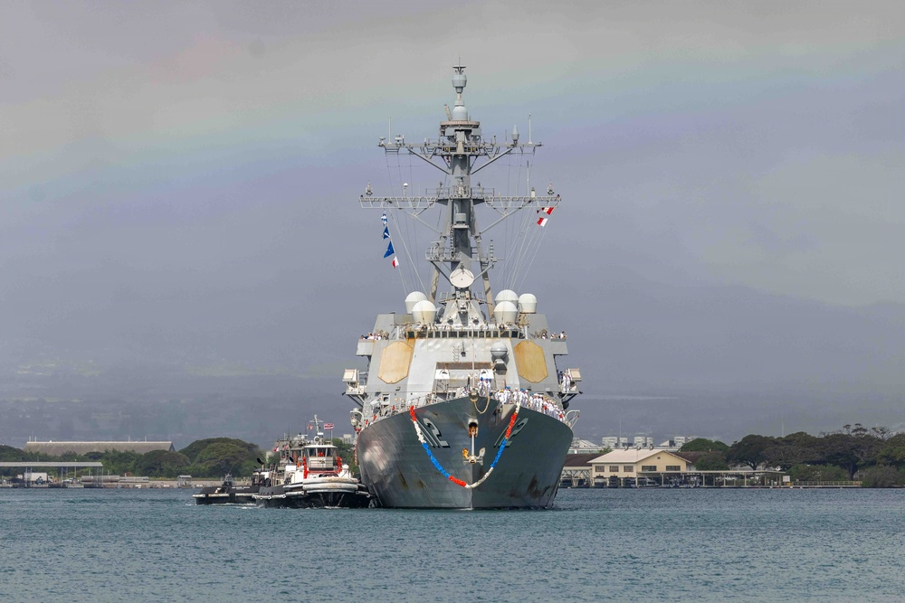

The guided-missile destroyer USS Michael Murphy came home to Hawaii Thursday after 346 days at sea, among the longest combat deployments of the Iran war, earning a Presidential Unit Citation for the crew
The Arleigh Burke-class destroyer and its embedded helicopter detachment returned to Joint Base Pearl Harbor-Hickam after deploying with the carrier USS Abraham Lincoln last December, the Navy's Commander, U.S. 3rd Fleet said in an official release. The crew earned the Presidential Unit Citation and Combat Action Ribbon for executing dozens of Tomahawk strikes, defending against drone and missile attacks, and completing 12 contested transits of the Strait of Hormuz while commanding a 14-ship coalition surface group as part of Operation Epic Fury. USNI News reported in September that the ship's prior commanding officer, Cmdr. Caitlin Cunningham, was relieved for loss of confidence before Cmdr. David Nicolas took over; Nicolas told reporters dockside Thursday the crew did not experience the kind of acute mental-health crises the Navy has reported elsewhere in the strike group, where eight sailors attempted suicide during the deployment.